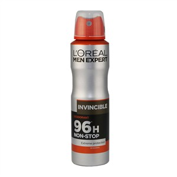
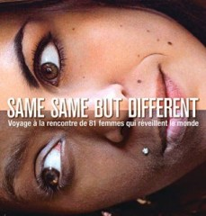
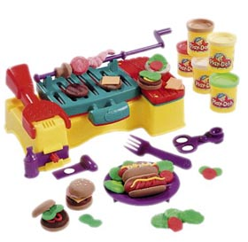

La Génèse
J’ai failli les écouter parce qu’en terminal je me demandais comment faire des métiers de fou. On lui a dit de faire une école de commerce, et elle s’est bien intégré. Elle a fait un stage chez L’Oréal pour vendre du déodorant. L'année prochaine. chef des vendeurs de Déo dans le grand ouest. J’ai eu un déclic à un accident de voiture, et qu’elle a réalisé qu’il fallait faire ça maintenant ou jamais, et s’en foutre des regrets. En France on aime pas les échecs, et aux E-U ça se passe pas comme ça, on considère que ça te donne de la force de caractère et c’est bien dans ton CV.
Rencontre avec 81 femmes
+Projet 81 femmes, 81 femmes nées en 81. Elles doivent rencontrer plein de gens, voir des femmes de partout, des bourgeoises qui ont besoin de ‹ trouver leur raison de vivre ›, des femmes qui osent et qui n’ont pas peur d’oser maintenant. ‹ Mais écris un livre ! › ‹ Ah non moi je sais pas j’ai fait qu’une école de commerce ! ›
Écrit un livre!
Bref elle a écrit Same Same But Different. Expression qui vient de Thaillande, quand ils te servent du bœuf au lieu du poulet Nos sensations de voyages sont les mêmes, où qu’on aille.
Fais de la musique
‹ Marine good morning ›
CLIP :
http://www.dailymotion.com/video/xbx24x_clip-tu-penses-quoi-marine-goodmorn_musicAimer
Elle imite l’accent québécois dans sa romance. Elle décide de retrouver tous les gens qu’elle a connu et aimé, sans qu’on sache trop pourquoi, et elle les a photographié. retrouve les 24 personnes qu'elle a AIMER En gros c’est une mauvaise étudiante des beaux arts qui ne connais pas l’art et qui crois sincèrement réinventer la roue. Changer d'outil, ne pas s'enfermer dans une hyper spécialisation. Je suis très nul pour la pate à modeler
Voyage
On part 24 jours, un cycle de femme.




C’est aux Philippines, en 2002, que naît le projet 81 femmes. Sandra part y étudier un semestre dans le cadre de son école de commerce. Yuki est également du voyage. Sur place, elles donnent des cours à des femmes au passé compliqué (prison, prostitution...). Objectif : les aider à construire des projets professionnels.